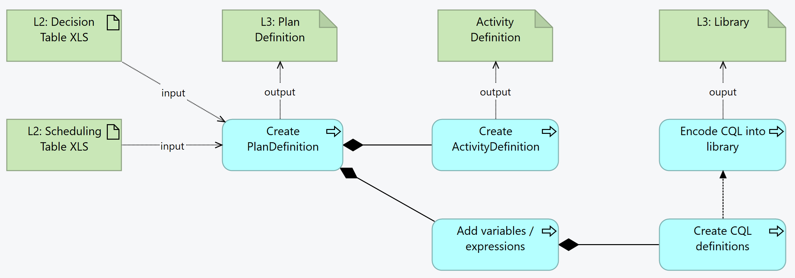

DRAFT SMART Guidelines L3 SOP
0.2.1 - CI Build

DRAFT SMART Guidelines L3 SOP
0.2.1 - CI Build

DRAFT SMART Guidelines L3 SOP, published by WHO. This guide is not an authorized publication; it is the continuous build for version 0.2.1 built by the FHIR (HL7® FHIR® Standard) CI Build. This version is based on the current content of https://github.com/WorldHealthOrganization/smart-ig-starter-kit and changes regularly. See the Directory of published versions
Scheduling logic represents the schedule of actions that are expected to be followed on a predefined schedule - for example a vaccination schedule. This doesn’t necessarily mean that the actions will be executed; the schedule is currently only expected to be communicated to the patient or professionals, as information. The professionals, based on the schedule, can always evaluate the needed actions. In practice, the schedule and the decision tables, combined with the runtime assessment and conditions, will determine a set of activities being planned or executed for or about the patients.

condition or dynamicValue), capture the expressions in a CQL library and refer to that library in the library`As with all FHIR Conformance resources, change management is critical. Do not set the version element of PlanDefinitions, ActivityDefinitions, and Libraries defined in the SMART Guideline, the version element will be set by the publication process. See the versioning topic for more information on change management.
| Tool | Usage | Doc |
|---|---|---|